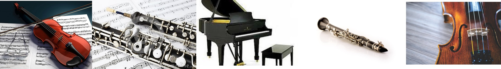

La música clásica es la corriente musical que comprende principalmente la música producida o basada en las tradiciones de la música litúrgica y secular de Occidente, principalmente Europa Occidental. Abarca un período de tiempo que va aproximadamente del siglo XI a la actualidad, aunque esta definición no es aplicable a la música realizada en nuestro siglo a pesar de presentar las mismas características. 1 , aunque las principales características del género fueron codificadas principalmente entre 1550 y 1900, que es habitualmente considerado como el período característico de producción de la música clásica. En un sentido historiográfico, la música clásica se divide en varios períodos: música antigua o medieval, que abarca el período comprendido por la Baja Edad Media en Europa (1000-1400); la música renacentista (1400-1600); la música barroca, que coincide con desarrollo del arte barroco (1600-1750); el clasicismo (1750-1800), que en la Historia de la música y la musicología, es a veces llamado «música clásica» 2 ; el Romanticismo (1800-1910); y la música contemporánea, que comprende las distintas corrientes de música clásica del siglo XX, que adopta la composición atonal y disonante y otras tendencias opuestas a corrientes anteriores.

La musica clasica es un execelente relajante para los seres humanos que tienen una vida muy rutinaria:
Alivio del estrés
Después de escuchar música clásica durante 30 minutos, mujeres embarazadas sintieron que sus niveles de depresión, estrés y ansiedad, disminuyeron, según un estudio en el 2008, publicado en la revista Journal of Clinical Nursing. Además, cuando sintonizaron música clásica, la presión arterial de los oyentes disminuyó, según un estudio de la Universidad de San Diego en el 2004.
Elevación emocional
En un estudio del 2001 hecho en la Universidad Metodista del Sur en los Estados Unidos, los participantes informaron que al escuchar música clásica sus emociones se intensificaron. Los investigadores se dieron cuenta que los comentarios de las personas fueron más cercanos y expresivos.
Disuade la delincuencia
En 2003, Londres comenzó a tocar música clásica en varias estaciones del metro. Los robos, asaltos y el vandalismo disminuyeron un año y medio después. En Portland, Oregon, las autoridades de tránsito tuvieron resultados similares: después de que este género se tocó en las estaciones de tren, las llamadas a la policía se redujeron en un 40%. Otras ciudades, como Nueva York, Atlanta, Minneapolis y Toronto han sintonizado música clásica, también.
Crecimiento del bebé prematuro
Cuando los bebés prematuros fueron expuestos a una media hora de música clásica, crecieron más rápidamente, según una investigación de la Universidad de Tel Aviv. Aunque los investigadores no están seguros de la causa de este efecto, creen que está relacionado con los beneficios de la reducción del estrés.
Reducción del dolor
Se ha encontrado que la música reduce el dolor crónico, según un estudio publicado en la Revista de Enfermería Avanzada. Los investigadores británicos se dieron cuenta que los pacientes que escucharon música clásica al recuperarse de una cirugía de estómago necesitaron menos analgésicos
Mejora el sueño
Escuchar 45 minutos de música clásica ante de ir a la cama ayuda a tener una mejor noche de sueño, según un investigador húngaro. También puede ser una forma de frustrar el insomnio.
Impulso cerebral
Un estudio vincula la música de Mozart con mayores puntuaciones de coeficiente intelectual. Y otro estudio ha demostrado que puede disminuir los síntomas de la epilepsia.